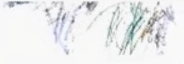
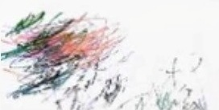

b3nn3t
die drei letzten shows im kapitel.


live
- 13. juni · jugendfestival (ZAK) · Jona
- 26. juni · oya! openairfestival (gleis19) · Wien
- 08. august · winterthurer musikfestwochen · Winterthur

ein schatten steht im rahmen.
das holz war ein paar monate stumm.
jetzt reisst der wind eine fuge.
da drinnen wird etwas abgelegt,
das lange zu schwer war.
drei letzte windstösse.
dann drückt die kälte die tür auf.
wer geht, hat ein neues gesicht.

